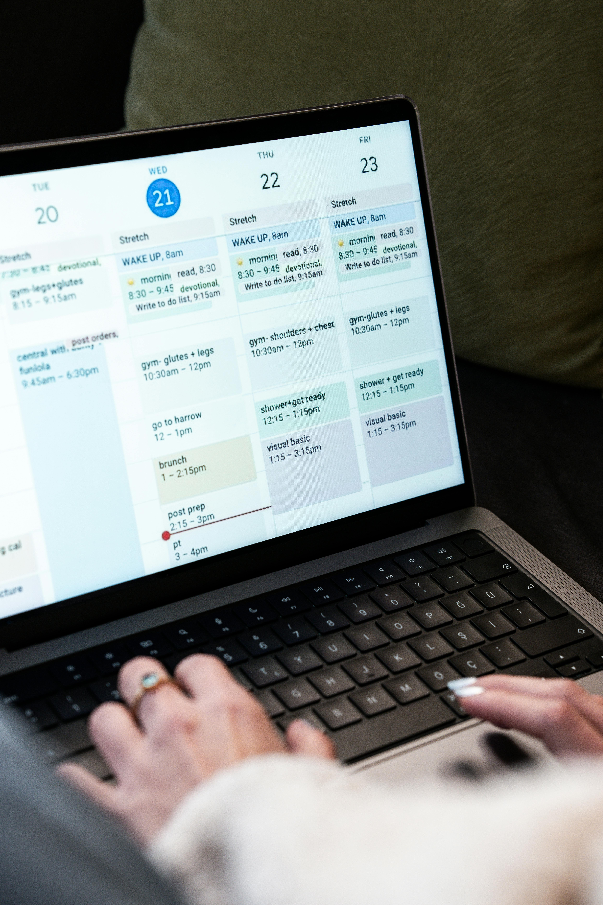

Welcome! to the University of Greater Manchester, Bolton
Your adventure starts here!
Hey there! We're absolutely thrilled to have you join our vibrant community.
This guide is your personal companion for an amazing student experience—packed with everything you
need to thrive, earn, explore, and make the most of your time with us!
Whether you're chasing academic dreams, earning some extra cash, or discovering hidden gems, Bolton has it all. Here's the magic:
💷 Your Wallet Will Thank You: Bolton is seriously affordable! Rent costs significantly less than Manchester or other major UK cities, meaning more money for adventures, nights out, or building your savings. That's real money in your pocket!
🚌 Connected to Everything: Just 10 miles (30 minutes) from Manchester's bustling city centre, yet with your own vibrant personality. Bolton gives you the best of both worlds — a tight-knit community with access to bigger city attractions whenever you fancy them.
😊 Genuinely Friendly Faces: We're not just saying it — Bolton was officially voted the "Friendliest People in Britain" in 2003! You'll find locals are genuinely welcoming, helpful, and happy to chat. It's the kind of place where people actually say hello!
🎓 Built for Students: With thousands of students studying at the University of Bolton, there's a thriving student culture here. You won't be alone — far from it! There are student unions, societies, events, and communities around every corner.
📍 Endless Things to Do: From world-class museums and beautiful parks to amazing restaurants, quirky cafes, and weekend adventures — boredom isn't an option in Bolton!
QUICK FACTS ABOUT BOLTON
🎓 Population: 184,000+ vibrant residents
🏫 University: Home to the thriving University of Greater Manchester with 5,000+ students
🚌 Location: Perfectly positioned 10 miles northwest of Manchester
💷 Cost of Living: 15–20% cheaper than Manchester — no joke!
😊 Vibe: Genuinely welcoming, safe, and friendly community
Get these done and you're golden! (Pro tip: don't stress—you've got this!)
What This Guide Is All About
You're about to discover everything that makes student life in Bolton amazing:
Let's make your Bolton experience absolutely unforgettable!
💼 Part-Time Jobs
Your Ultimate Student Job Guide
Ready to Earn? We've Got You Covered!
Picture this: Extra pocket money for nights out, new clothes, weekend adventures, or (let's be
real) emergency pizza at 2 AM. That's what student jobs are all about! Beyond just the cash,
you'll build skills that'll impress future employers and gain real-world experience that makes
your CV shine.
Why Get a Part-Time Job?
✨ Extra Cash Flow
Whether you're saving for that holiday, treating yourself, or just surviving on a tighter
budget, a part-time job tops up your funds brilliantly.
🎯 Build Your CV
Employers love seeing work experience. You're not just earning money — you're building a
professional profile that'll open doors after graduation.
🤝 Level Up Your Skills
Time management, teamwork, customer service, problem-solving — employers eat this stuff up!
Real-world skills beat classroom theory every time.
👥 Make New Friends
Work brings you closer to other students, local people, and colleagues who genuinely become
friends. Some of the best workplace friendships happen during your student years!
Before You Start: The Essentials
How Many Hours Can You Work?
During term: Most students work 20 hours weekly (perfect alongside studies!)
During holidays: Crank it up! More hours, more money
International students: Check your visa conditions carefully — there are sometimes restrictions
National Minimum Wage (2024 UK Rates)
Everyone’s entitled to fair pay:
Age 21+: £12.21/hour
Age 18–20: £10.60/hour
Under 18: £8.40/hour
🪪 You'll Need These to Work
National Insurance Number — Absolutely essential (it's FREE to apply!)
UK Bank Account — For your wages to be paid
ID & Proof of Address — Most employers ask for these
Genuine enthusiasm — And maybe a nice smile! 😊
🏭 WAREHOUSE & DISTRIBUTION JOBS
"Get Hands-On, Get Paid Well!"
Love staying active? Warehouse jobs are perfect for energetic students who don't mind being on their feet. It's physical, straightforward, and honestly? The pay is really solid.
What You'll Actually Do:
📦 Picking & Packing – Gathering items from shelves and carefully packing them for customers
🏷️ Labeling & Organizing – Making sure everything is tracked and in its place
📊 Stock Management – Keeping the warehouse running smoothly and well-stocked
🚚 Loading & Unloading – Moving products efficiently from vehicles to storage
🧾 Inventory Checking – Keeping track of stock levels accurately
The Money Talk: 💰 £12–14 per hour – That’s brilliant pay for student work! Over a month of weekend shifts, that’s real money.
When You'll Work:
🕐 Flexible shifts around your timetable
🌙 Evening and weekend shifts available
🏖️ Holidays = perfect time to rack up hours
⏰ 24/7 operations mean plenty of shift patterns
Perfect Companies Hiring in Bolton:
Amazon Fulfillment Centre
DPD Logistics
Local distribution hubs
Courier companies
Retail warehouses
How to Bag a Warehouse Job:
Visit company websites and apply directly (quickest method!)
Fancy work that actually matters? Care work is incredibly rewarding. You're genuinely helping people while building skills that look incredible on any CV — especially if you're considering healthcare, social work, or psychology.
🧠 What You'll Actually Do:
🧺 Supporting Daily Living – Helping people with tasks they find challenging, making their lives easier and better
🫶 Personal Care Assistance – Providing dignity and respect while helping with personal hygiene and dressing
🍲 Meal Preparation – Creating nutritious, tasty meals and helping people enjoy their food
💬 Companionship – Being genuinely present, chatting, listening, and making a real connection
🧹 Light Housekeeping – Keeping their home comfortable and clean
🛍️ Running Errands – Shopping, appointments, or simply being their trusted support
💰 The Money Talk:
£11–13 per hour — solid pay with genuine flexibility and often opportunities for regular hours.
🕒 When You'll Work:
Shifts available throughout the week
Weekend work (often slightly higher pay!)
Evening care positions for students with daytime lectures
Holiday work during university breaks
Regular recurring shifts with familiar clients
🎓 Perfect for Students Who:
✅ Genuinely enjoy helping others
✅ Have patience and compassion
✅ Are reliable and responsible
✅ Have good communication skills
✅ Want work that truly matters
✅ Are studying nursing, psychology, social work, or healthcare
🔍 General Search: Indeed.com (search "care worker Bolton")
📱 Local Agencies: Search "care agencies Bolton" on Google for direct contact numbers
💡 University: Check with your university careers office — they often have connections!
🗂️ Office & Admin Jobs
💼 Office & Admin Jobs
Roles include data entry, reception, and customer support.
Typical Pay: £10 – £12 per hour
Skills Required: Organization, typing, friendly communication
Perfect for: Students interested in business, management, or IT
🛍️ Retail & Hospitality Jobs
“Brilliant Vibes, Flexible Shifts, Great Connections!”
Retail and hospitality are where student life truly happens! Work alongside other students, meet amazing colleagues, enjoy genuine flexibility, and honestly? Have a lot of fun while you're earning.
🎯 What You'll Actually Do:
Welcome to the fast-paced world of retail and hospitality! Your exciting shifts involve:
🛒 Retail Roles:
👕 Shop Assistant – Helping customers find perfect items, processing sales, making people happy
🌐 Company Websites: Search “(Store Name) careers” for direct applications

💻 ONLINE & DELIVERY JOBS
"Work When You Want, From Where You Want — Total Freedom!"
These are the golden tickets of student employment! Work entirely on your own schedule, from anywhere, with genuinely flexible hours. Perfect if you have unpredictable university timetables.
What You'll Actually Do:
🍔 Food Delivery (Bike, Scooter, or Car):
Pick up meals from restaurants
Navigate to customers' homes using GPS
Deliver hot food promptly and professionally
Collect payments and tips
Manage your own schedule entirely
📦 Parcel/Package Delivery:
Pick up parcels from distribution centers
Navigate delivery routes
Deliver packages to customers
Collect signatures or update tracking
Manage your own hours completely
🎓 Online Tutoring:
Help students with specific subjects
Work through video calls or messaging
Create lesson plans and materials
Track student progress
Set your own rates and hours!
🧾 Virtual Assistant:
Manage emails and schedules for busy professionals
Data entry and organization
Research and information gathering
Administrative support entirely remote
Work from your room!
🎨 Freelance Work (Design, Writing, Social Media):
Create content for clients
Write articles or blog posts
Design graphics or marketing materials
Manage social media accounts
Build a portfolio while earning!
💰 The Money Talk:
£12–20+ per hour (varies massively — you control earning potential!)
🕒 When You'll Work:
Work whenever suits you (literally!)
3 AM? Sure. Tuesday afternoon? Brilliant. Christmas? Go for it!
Combine multiple delivery slots with tutoring
Build your own schedule entirely
No set shift times or obligations
Perfect around unpredictable university timetables
🎯 Perfect for Students Who:
✅ Have unpredictable lecture schedules
✅ Want total flexibility and independence
✅ Prefer working alone or remotely
✅ Are self-disciplined and motivated
✅ Have their own vehicle (for delivery) or just a laptop (for online work)
"Work Where You Study—Convenience Meets Opportunity!"
Want to work without traveling? Campus jobs are absolutely brilliant! You're already there for lectures, so why not earn money between classes? Plus, employers totally understand student schedules.
🌟 In your interview, emphasize reliability and flexibility
🌟 Show genuine interest in helping other students
🌟 Be professional—you're representing the university
🌟 Build relationships with colleagues—campus is a small world!
🌟 Seek feedback and improvement opportunities
🌟 Use it as a networking opportunity—build genuine connections
🏠 Housing Hacks
🏠 Finding Your Perfect Bolton Home
Let's be honest: finding accommodation is important, but it doesn't need to be stressful! Bolton has brilliant, affordable options for every budget and preference. We'll walk you through it step by step.
📍 Where Students Actually Live in Bolton
🏙️ Town Centre
Vibe: Lively, convenient, buzzing with activity
Walking distance to shops, bars, restaurants, and clubs
Close to university and college campuses
Vibrant nightlife scene
Everything on your doorstep!
Rent: £500–650/month for room or studio
Best For: Social students who love action
Perfect If: You want minimal travel time and maximum fun
🏡 Astley Bridge
Vibe: Quiet, family-friendly, peaceful study environment
Residential charm with modern facilities
Excellent bus links to town
Parks and green spaces nearby
Genuine sense of community
Rent: £350–500/month for room share
Best For: Students prioritizing peace and study
Perfect If: You need focus and tranquility
🏘️ Horwich
Vibe: Suburban comfort with good connectivity
Modern amenities and shops
Strong transport links throughout Bolton
Quieter than town centre
Family-oriented neighborhoods
Rent: £400–550/month
Best For: Practical students with steady routines
Perfect If: You want balanced convenience and calm
🏠 Deane / Heaton
Vibe: Most affordable, genuinely residential, local community
Budget-friendly options
Peaceful, family neighborhoods
Local shops and amenities
Further from action but saves serious money
Rent: £350–450/month
Best For: Budget-conscious students
Perfect If: You're serious about saving money
💰 Real Rental Costs Breakdown
Living Alone or Mostly Alone:
Single Room (Shared House): £400–550/month
Studio Apartment: £500–700/month
1-Bedroom Flat: £600–800/month
Shared Living (Split Costs!):
2-Bedroom Flat (split 2 ways): £350–500/month
3-Bedroom House (split 3 ways): £300–400/month
Halls of Residence: £500–700/month
💡 Pro Tip: Flat-sharing is genuinely the way to go! You save money AND have built-in friends. Win-win!
📦 What's Actually Included in Rent?
Usually Included:
✅ Your room/space
✅ Use of communal areas (kitchen, lounge, bathroom)
✅ Basic furniture
✅ Sometimes: Washing machine, heating
You'll Pay Separately For:
Council tax (but students often get exemption!)
Electricity and gas
Internet/broadband
Water and sewage (sometimes)
Contents insurance (protects your stuff!)
📊 Average Monthly Bills (On Top of Rent)
Council Tax (if not exempt): £80–120
Electricity & Gas: £40–70 (split)
Internet: £20–40 (split)
Water: £15–25 (split)
Total: £155–255/month
💡 Pro Tip: Students are often COMPLETELY EXEMPT from council tax! Always claim this—it saves serious money!
🔍 How to Find Accommodation - Step by Step
Step 1: Start Your Search (6–8 Weeks Before Moving)
The earlier you start, the more options you'll have
Popular places fill incredibly quickly
Give yourself time to view multiple options
Step 2: Use These Brilliant Websites
🏠 Rightmove.co.uk - UK's largest property portal
• Massive selection
• Advanced search filters
• Virtual tours available
🏠 Zoopla.co.uk - Excellent comparison tool
• Great filters
• Price trends visible
• Lots of student properties
🏠 SpareRoom.co.uk - Specialist flat-share site
• Specifically for room shares
• Student-focused
• Affordable options
🏠 OpenRent.com - Direct from landlords
• Often fewer fees
• Updated constantly
• Good reviews system
🏠 Facebook Groups - Personal connections
• “Bolton Student Housing”
• “Bolton Rentals”
• Direct from students/landlords
• Often negotiable prices!
🏠 University Accommodation Office - Your First Choice!
• Pre-vetted properties
• Support available
• Safe and verified
• Often has halls of residence
Step 3: View Multiple Properties
Never settle on the first option
View 3–5 properties minimum
Take photos and videos
Visit at different times of day
Check out the neighborhood
🧾 Your Rights as a Student Tenant
You Have the Right To:
✅ Safe, clean living conditions
✅ Written tenancy agreement
✅ Protected deposit
✅ Privacy in your room
✅ Timely repairs
You're Responsible For:
Paying rent on time
Keeping your space clean
Reporting problems promptly
Respecting neighbors
🚫 RED FLAGS – Avoid These!
❌ Asking for payment before viewing
❌ Prices far below market rate
❌ No written agreement
❌ No deposit protection scheme
❌ Property in visibly poor condition
❌ Cash-only payments
⚠️ Trust your gut: If something feels off, walk away! Plenty of good options out there.
📋 Before You Move In - Checklist
☑️ Get receipt for deposit
☑️ Document property condition
☑️ Check all utilities working
☑️ Get meter readings
☑️ Know emergency contacts
💡 Money-Saving Accommodation Hacks
💡 Share accommodation – split costs!
💡 Book early for better rates
💡 Negotiate longer leases for discounts
💡 Claim council tax exemption
💡 Split streaming/internet bills
📞 Get Help with Housing
🏫 University Accommodation Office:
📞 Phone: +44 (0)1204 903000
📧 Email: accommodation@bolton.ac.uk
📍 Location: Student Services Building
🕒 Hours: 9 AM - 5 PM, Monday - Friday
💼 Citizens Advice (Free Housing Help):
💻 Website: www.citizensadvice.org.uk
📞 Phone: 0800 144 8848
✅ Completely FREE advice on tenant rights
✅ Help with landlord disputes
✅ Housing problems resolved
🏠 Shelter (Housing Crisis Support):
📞 Emergency: 0808 800 4444
💻 Website: www.shelter.org.uk
⚠ Help if you're becoming homeless
🆘 Crisis support available
🏘 Bolton Council Housing Department:
📞 Phone: +44 (0)1204 333333
💻 Website: www.bolton.gov.uk
🏘 Housing advice and support
📍 Amazing Places
🎉 Your Ultimate Bolton Entertainment Guide
Bolton isn't boring—trust us! There's genuinely brilliant stuff to do, see, and explore. Whether you're into culture, nature, food, or adventure, we've got you covered.
🏛️ Museums & Culture (Often FREE!)
🎨 Bolton Museum & Art Gallery
What's Inside:
🧱 Egyptian mummies (genuinely fascinating!)
🖼️ International art collections
🏺 Local history exhibitions
🔄 Rotating displays
🎟️ All FREE admission!
Why You'll Love It:
🌧️ Great for rainy days
💸 Completely free
📚 Learn about Bolton’s history
☕ Relaxed, study-friendly atmosphere
📍 Location: Le Mans Crescent (Town Centre)
🕐 Hours: Tuesday–Sunday, 10 AM – 5 PM
🎟️ Cost: Free
🚌 Transport: Short walk or easy bus access
Perfect For: Students on budgets, culture lovers, rainy days
🏡 Hall i’ th’ Wood Museum
What's Inside:
🧵 Birthplace of the spinning mule!
🪑 Period furniture (16th–17th century)
🏭 Textile history exhibits
🎛️ Interactive displays
Why You'll Love It:
💡 Learn Bolton’s industrial roots
🎓 Student discounts (always ask!)
📸 Beautiful photo opportunities
📍 Location: Green Lane, Tonge Moor
🎟️ Cost: £5 (student discounts available)
🚌 Transport: Bus accessible
Perfect For: History lovers, engineering students
🏰 Smithills Hall & Country Park
14th-century manor house with stunning architecture